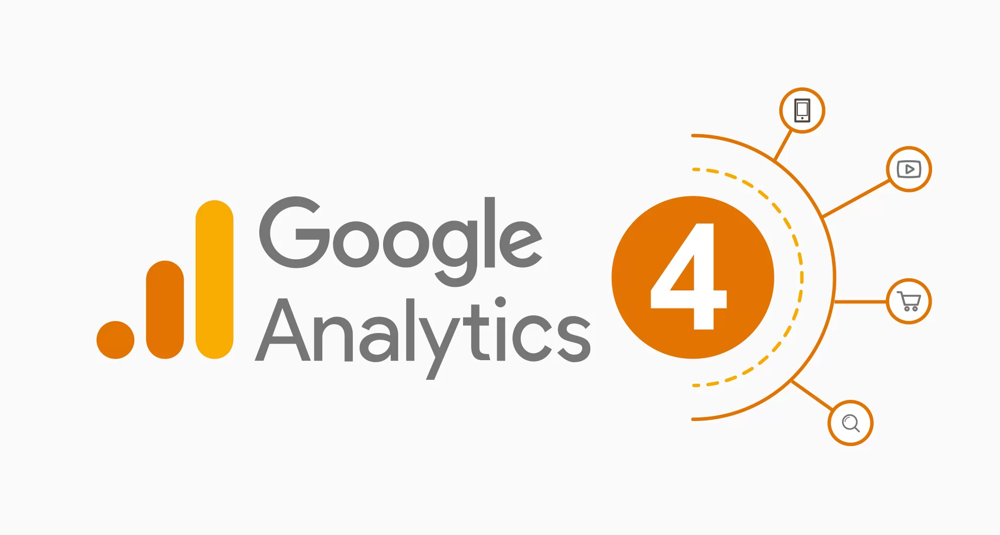
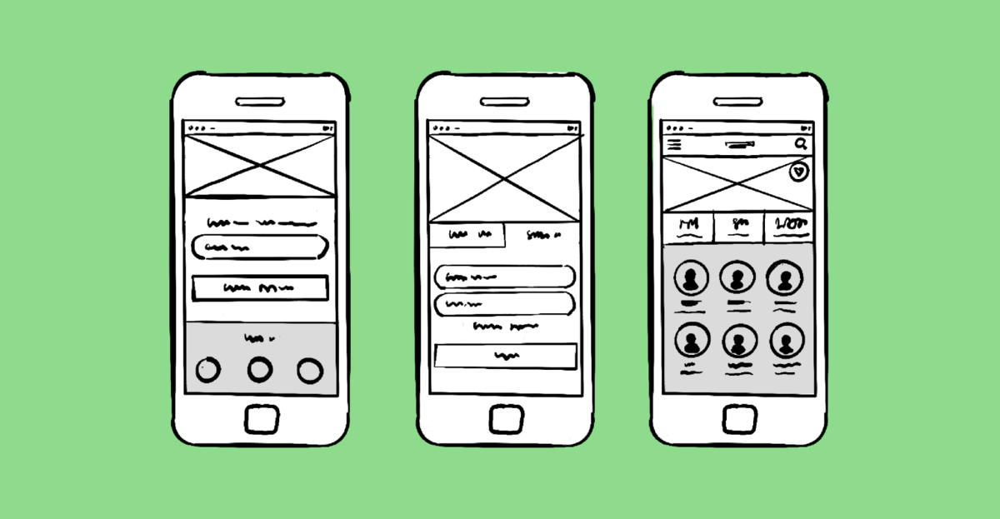

A Case Study in
Historic Property Risk Assessment
In this project, I cleaned raw Buffalo city data and developed a predictive model as per client requirements, using Python, SQL, and Tableau to assess historic property risks and inform preservation decisions for Buffalo city.

Authored a chapter in Advances in Enterprise Technology Risk Assessment (IGI Global) on modernizing legacy systems via Salesforce cloud migration, with emphasis on data governance, regulatory compliance, and business efficiency
In this project, I created a web-based application for predicting housing prices based on several input features using a machine learning model. It uses the Gradio library to create the user interface and the Orange library to handle the data and model prediction.

Welcome to my Tableau projects section. Here, I've created dynamic dashboards, reports, and visualizations using Tableau to transform complex data into actionable insights. Explore these projects to see how I turn data into compelling visual stories.

I upgraded the store's analytics platform to Google Analytics 4, enabling advanced insights and reporting. Leveraging real-time and historical sales data, I developed dashboards that significantly enhanced business analysis and informed future business decisions.

Using MARVEL tool, I have created few prototyping models for various platforms.

I completed an ETL pipeline project using Talend Open Studio and Oracle Cloud Platform. I configured Talend to integrate with an Oracle Data Warehouse, mastering secure data flow and Java environment complexities. The project produced a Tableau dashboard with key visualizations: Highest Salesprice, SubCategory and Brand prices. These tools empower data-driven decision-making. Overcoming challenges like managing Slowly Changing Dimensions enhanced my ETL and data visualization skills.